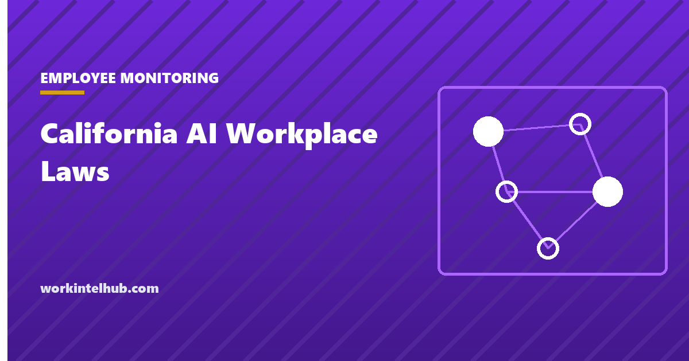

California AI Workplace Laws

California regulates AI in the workplace through two sets of rules already in force and three bills on the Governor's desk. As of 15 September 2026, the Civil Rights Council's automated decision system regulations have applied since October 2025, the privacy agency's automated decision-making rules took effect in January 2026, and AB 1883, SB 947 and SB 951 were presented to the Governor this month with a decision due by 30 September.
Coverage elsewhere has already reported one of those bills as law. It is not, yet. This page separates what applies today from what is pending, gives the effective dates, and has a checker for which rules your tools trigger. It will be updated when the Governor acts.
Which rules apply to your tools
Tick what applies to your California workforce
Status as of 15 September 2026. Bills on the Governor's desk have until 30 September to be signed or vetoed; this page will be updated when they are.
In force now
Civil Rights Council regulations on automated decision systems, effective 1 October 2025. The Civil Rights Council regulations make explicit that using an automated decision system to make or assist employment decisions can violate the Fair Employment and Housing Act where the result discriminates on a protected basis, whether by design or by disparate impact. They define an automated decision system broadly as a computational process that makes a decision or facilitates human decision-making about an employment benefit, which reaches résumé screeners, assessment games, video interview scoring and productivity ranking. Employers and their agents must retain ADS-related records, including the data used, for four years, and assessments that elicit information about a disability can be an unlawful medical inquiry. Evidence of anti-bias testing is relevant to a defence; its absence is relevant the other way.
CCPA regulations on automated decision-making technology, effective 1 January 2026. The California Privacy Protection Agency adopted rules in July 2025, approved in September 2025, covering risk assessments, cybersecurity audits and consumers' rights to notice, opt-out and access in relation to automated decision-making technology used for significant decisions, which include employment decisions. Because the CCPA treats employees and applicants as consumers, covered businesses owe those rights to their workforce. The rules apply to businesses above the CCPA thresholds, not to every employer.
On the Governor's desk
| Bill | What it would do | Effective if signed | Status on 15 September 2026 |
|---|---|---|---|
| AB 1883 | Prohibits AI-based workplace surveillance tools that recognise or infer an employee's emotional state, and the collection of neural data. Exceptions for safety tools and certain federally regulated defence and aviation work. Civil penalty up to $500 per violation; Labor Commissioner and public prosecutors may enforce and seek injunctions. | 1 January 2027 | Enrolled 3 September, presented to the Governor 10 September |
| SB 947 | Prohibits sole reliance on an automated decision system for discipline, termination or deactivation; requires human review and written notice to the employee that a human reviewed the decision. | 1 July 2027 | Awaiting the Governor |
| SB 951 | Extends the California WARN Act to require advance notice of mass layoffs of 50 or more resulting from AI or automation at establishments with 75 or more employees. | Per the bill | Awaiting the Governor |
The Governor has until 30 September 2026 to sign or veto bills passed in the final weeks of the session. AB 1883 is the one with the widest reach for monitoring vendors, because sentiment and engagement scoring from text, voice or video is a feature several productivity tools already sell. The "emotional state" term is not defined in the bill, which is the point employers and vendors will litigate first if it becomes law.
How this compares to New York City and Illinois
| California | New York City (Local Law 144) | Illinois (HB 3773) | |
|---|---|---|---|
| Mechanism | Anti-discrimination regulations plus privacy rights, plus pending bans on specific uses | Bias audit, published summary, candidate notice | Discriminatory AI use is a civil rights violation; notice required |
| Scope | Any employment decision, and monitoring uses if AB 1883 passes | Hiring and promotion only | Recruitment, hiring, promotion, discipline, discharge and more |
| Since | October 2025 and January 2026 | July 2023 | January 2026 |
The three regimes are converging on the same questions: what the tool measures, whether outcomes differ by protected group, whether a human can override it, and whether the people it affects were told. A tool that can answer those for New York City's audit can mostly answer them for California's records requirement. Our automated employment decision tool entry covers the New York City regime and its enforcement record, and the agentic AI in HR guide covers the tools these rules are aimed at.
What to do now
- List every tool that scores or ranks people, including productivity dashboards that rank employees, because the ADS definition reaches them.
- Check for sentiment and emotion features in monitoring software and switch them off for California staff before 1 January 2027 if AB 1883 is signed. The cost of switching early is nil.
- Keep four years of ADS records, including inputs and outputs, and ask vendors for their bias testing in writing.
- Put a human in the loop for discipline and termination and record it. SB 947 would require it; every regime rewards it.
- Give notice. California's monitoring rules sit alongside the notice statutes in four other states, and the monitoring policy template has a section for automated tools.
Key takeaways
- In force now: Civil Rights Council ADS regulations since 1 October 2025, and CCPA automated decision-making rules since 1 January 2026.
- AB 1883 would ban AI inference of emotional state and collection of neural data from 1 January 2027. It was presented to the Governor on 10 September and is not yet law.
- SB 947 would bar sole reliance on automated systems for discipline or termination from 1 July 2027. SB 951 would extend WARN to AI-driven layoffs.
- The Governor's deadline is 30 September 2026.
- ADS records must be kept four years. Assessments that elicit disability information can be unlawful medical inquiries.
- Inventory scoring tools, switch off emotion features for California staff, keep records, and put a human in the loop for discipline.
Frequently asked questions
Is AB 1883 law?
Not as of 15 September 2026. It passed both houses, was enrolled on 3 September and presented to the Governor on 10 September. The Governor has until 30 September to sign or veto. If signed it takes effect on 1 January 2027.
What would AB 1883 prohibit?
The use of AI-based workplace surveillance tools to recognise or infer an employee's emotional state, and the collection of neural data, meaning information generated by measuring the activity of the central or peripheral nervous system. Safety tools and certain federally regulated defence and aviation work are excepted. The civil penalty is up to $500 per violation.
What California AI employment rules apply right now?
The Civil Rights Council's regulations on automated decision systems, effective 1 October 2025, which treat discriminatory use of such systems as a FEHA violation and require four years of records; and the CCPA regulations on automated decision-making technology, effective 1 January 2026, which give employees and applicants of covered businesses rights to notice, opt-out and access.
Does California require a bias audit like New York City?
No. California's approach is anti-discrimination liability plus recordkeeping and privacy rights rather than a mandatory audit. Evidence of anti-bias testing is relevant to defending a claim, so most employers using such tools do test, but the statute does not require publishing an audit.
What is SB 947?
A bill that would prohibit an employer from relying solely on an automated decision system to discipline, terminate or deactivate a worker, requiring human review and written notice that a human reviewed the decision. It is awaiting the Governor's decision; if signed it would take effect on 1 July 2027.
Do these rules apply to employee monitoring software?
The ADS regulations apply where monitoring output is used to make or assist employment decisions, such as ranking employees for performance action. AB 1883, if signed, would apply directly to monitoring tools that infer emotional state. Ordinary activity logging without decision-making or emotion inference is governed by the notice rules rather than these.